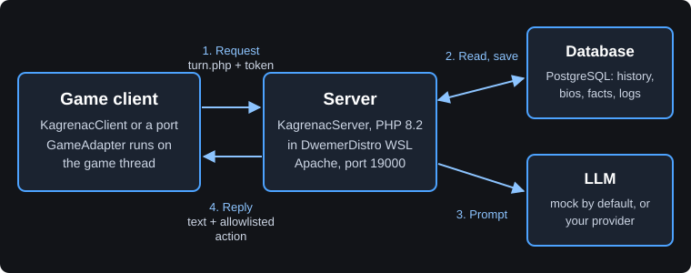

KAGRENAC AI Mod Maker
KAGRENAC helps you build your own AI mod with the coding agent you already use. Tell it the game, the feature you want and a name for your mod. It plans the gameplay, checks what that game can really do, sets up your mod's own server in DwemerDistro and builds a first version for you to try in game.
Build a mod: Get started. Playing someone else's mod? Install a published mod.
What You Can Make
- Characters you can talk to. Type to an NPC, companion or advisor in the game's own chat box, and read or hear the reply.
- Characters who notice things. An NPC can remark on what the game reports, such as arriving somewhere or a fight ending.
- Companions who act. A reply can ask for something the game already knows how to do, such as following you. The game decides whether it happens.
- Optional voice. Spoken replies with PocketTTS, and push-to-talk dictation if you want it.
- A mod that is yours. Each mod gets its own name, server, database and releases. KAGRENAC is the template you build from, not a mod players install.
Included And Built For You
Ready to use in the template:
- Your mod's server and dashboard. They handle conversations, game events, character bios and facts, history, checkpoints and optional memory.
- Provider connections. Dialogue models, PocketTTS and other voice services, and optional speech input.
- A shared Windows client. A C++ library that sends the player's lines, receives replies and passes action requests to the game, with a console example that stands in for a game.
- A documented protocol that any game-side code can use to talk to the server.
Built by your agent for your game:
- The in-game chat and reply display, using what the game's mod tools allow.
- Observations: the events and details the game reports to the server.
- Voice playback, and microphone input if you ask for it.
- Action handlers: the game code that carries out each allowed action and checks the result.
Choosing a game starts this research and building; it is not a ready-made integration for that game. Your agent checks what the game can do first. See Game integration.
How A Mod Gets Built
- Brief. You tell your agent the game, the starting feature and the mod's name.
- Gameplay design. The agent turns your idea into a short loop the player can see and hear. See Gameplay design.
- Game integration. It checks your installed game and its mod tools before writing game code. See Game integration.
- Server and providers. Meanwhile, it sets up your mod's server and the AI services you choose. See Providers & voice.
- First prototype. One working slice in game: you type to a character and it answers. You play it and report back. See Testing.
- Expand and share. Add one feature at a time, then publish.
The agent keeps the plan and progress in the mod's PROJECT.md, so it can pick up where it left off.
How It Fits Together


- Your game mod sends the player's line and what the game can actually see right now.
- Your mod's server adds the character's bio, facts and recent conversation, then asks your providers for a reply.
- The game shows the reply, plays any voice, and runs a requested action only if it has its own handler for it.
Keep it local. Run the server on one PC or a trusted home network. The dashboard has no login, the game connects over plain HTTP, and there is no rate limiting.
Build Or Play
- Build a mod. Start from the KAGRENAC template with your coding agent: Get started. In the DwemerDistro launcher, Mods > Custom mods > Build a Mod! opens the KAGRENAC repository.
- Play a mod. Install a published KAGRENAC-based mod from the launcher, as below.
Install A Published Mod
- Run Update Distro in the DwemerDistro launcher.
- Open Mods > Custom mods > Browse mods, search by mod or game name, and choose the mod's card.
- Press Install server. This installs the mod's server in your DwemerDistro.
- Press Download mod release. This opens the game mod's download.
- Add the download to your game the way the mod's author describes, including any loader or load-order step.
The launcher installs the server only. It does not add, enable or set up the game mod for you. Enter any API keys on that mod's own dashboard. Being listed in Browse mods is not a review or an endorsement.
Guide Map
- Get started: get the template, give your agent the first prompt, and see who does what.
- Gameplay design: turn an idea into a loop players will notice.
- Game integration: check the game first, then build one connected in-game slice.
- Providers & voice: dialogue model, API keys, voice and speech input.
- Characters & memory: bios, facts, profiles, memory and checkpoints.
- Testing: the four kinds of evidence and the in-game checks.
- Updates & recovery: redeploys, release updates, template changes and backups.
- Publishing: package, review and publish your mod for players.
Pages 3 to 5 overlap in time: your agent prepares the server and providers while it researches the game.
Full Documentation
This guide explains the ideas. The KAGRENAC repository holds the exact commands and rules your agent follows:
- README.md and docs/getting-started.md: the first prompt and guided setup.
- docs/GAMEPLAY_DESIGN.md and docs/ENGINE_PLANNING.md: design and game integration.
- CONNECTORS.md: provider and voice settings.
- docs/PUBLISHING.md: packaging and publishing.
- SETUP.md and PROTOCOL.md: manual installs, maintenance, recovery and the server contract.
Next step: Get started.